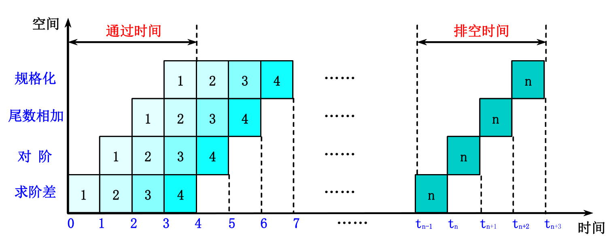
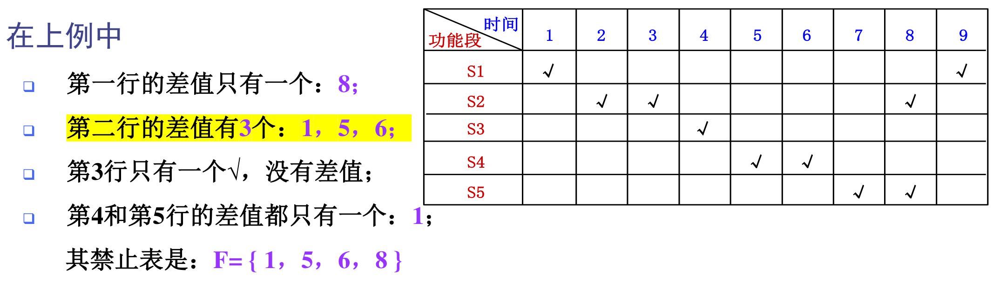
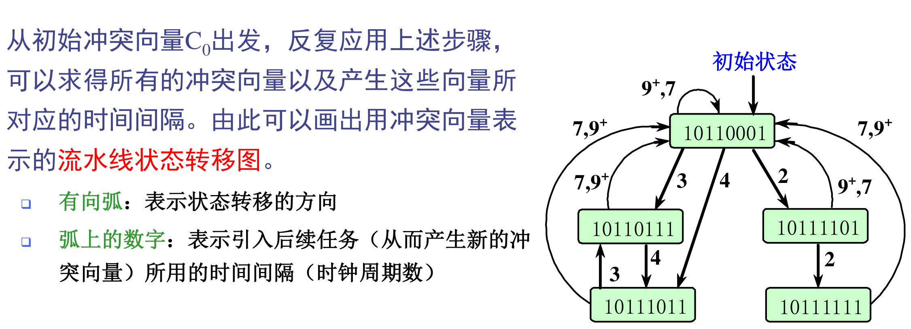

1 基础知识
-
SISD 单指令流单数据流 I = Instruction D = Data，SIMD,MISD（实际不存在）,MIMD同理
-
大概率事件优先的原则：对于大概率事件（最常见的事件），赋予它优先的处理权和资源使用权，以获得全局的最优结果。
-
Amdahl定律：加快某部件执行速度所获得的系统性能加速比，受限于该部件在系统中所占的重要性
-
程序局部性原理：程序在执行时所访问地址的分布不是随机的，而是相对地簇聚；这种簇聚包括指令和数据两部分。包括时间局部性和空间局部性
-
Amdahl定律:系统中某一部件由于采用某种更快的执行方式后整个系统性能的提高与这种执行方式的使用频率或占总执行时间的比例有关
$$ S_n = \frac{\text{系统性能}{\text{改进后}}}{\text{系统性能}{\text{改进前}}} = \frac{T_{\text{总执行时间(改进前)}}}{T_{\text{总执行时间(改进后)}}} $$
$$ S_n = \frac{1}{(1 - f_e) + \frac{f_e}{S_e}},S_e:加速比，f_e:改进段占比 $$
$$ T_{\text{改进后}} = T_{\text{改进前}} \times \left( (1 - f_e) + \frac{f_e}{S_e} \right) $$
$$ CPU\text{时间} = \frac{\sum_{i=1}^{n} (CPI_i \times IC_i)}{f} $$
$$ CPI = \frac{\sum_{i=1}^{n} (CPI_i \times IC_i)}{IC} = \sum_{i=1}^{n} \left( CPI_i \times \frac{IC_i}{IC} \right) $$
-
MIPS的三个缺陷： a) MIPS依赖于指令集，所以用它来比较指令集不同的机器的性能好坏是不准确的。 b) 在同一台机器上，它因程序不同而变化。 c) 它可能与性能相反。如具有可选硬件浮点运算部件的机器。
-
指令内部并行：单条指令中各微操作之间的并行。 指令级并行：并行执行两条或两条以上的指令。 线程级并行：并行执行两个或两个以上的线程。通常是以一个进程内派生的多个线程为调度单位。 任务级或过程级并行：并行执行两个或两个以上的过程或任务以子程序或进程为调度单元。 作业或程序级并行：并行执行两个或两个以上的作业或程序。
-
时间重叠:引入时间因素，让多个处理过程在时间上相互错开，轮流重叠地使用同一套硬件设备的各个部分，以加快硬件周转而赢得速度。 资源重复:引入空间因素，以数量取胜。通过重复设置硬件资源，大幅度地提高计算机系统的性能。 资源共享:这是一种软件方法，它使多个任务按一定时间顺序轮流使用同一套硬件设备。
2 流水线
- 时空图示例：

-
流水寄存器：在相邻的两段之间传送数据，以提供后面要用到的信息，并把各段的处理工作相互隔离
-
静态流水线：在同一时间内，多功能流水线中的各段只能按同一种功能的连接方式工作。 动态流水线：在同一时间内，多功能流水线中的各段可以按照不同的方式连接，同时执行多种功能。
-
各段时间相等TP $$ TP = \frac{n}{(n + k - 1) \cdot \Delta t}\ TP_{max} = \lim_{n \to \infty} \frac{n}{(n + k - 1) \cdot \Delta t} = \frac{1}{\Delta t}\ TP = \frac{n}{n + k - 1} TP_{\max} $$
-
各段时间不等TP $$ TP = \frac{n}{\sum_{i=1}^{k} \Delta t_i + (n-1) \max(\Delta t_1, \Delta t_2, \cdots, \Delta t_k)}\ TP_{\max} = \frac{1}{\max(\Delta t_1, \Delta t_2, \cdots, \Delta t_k)} $$
-
加速比 $$ S = \frac{nk}{k + n - 1}\ s_{\max} = \lim_{n \to \infty} \frac{nk}{k + n - 1} = k $$
-
效率 $$ E = \frac{e_1 + e_2 + \cdots + e_k}{k} = \frac{ke_1}{k} = \frac{kn\Delta t}{kT_k}\ E = \frac{n}{k + n - 1}\ E_{\max} = \lim_{n \to \infty} \frac{n}{k + n - 1} = 1\ E = \frac{n \text{个任务实际占用的时空区}}{k \text{个段总的时空区}} $$
-
效率不高的原因： ➢多功能流水线在做某一种运算时，总有一些段是空闲的 ➢ 静态流水线在进行功能切换时，要等前一种运算全部流出流水线后才能进行后面的运算 ➢ 运算之间存在关联，后面有些运算用到前面运算的结果 ➢ 流水线的工作过程有建立与排空部分
-
非线性流水线： ➢向一条非线性流水线的输入端连续输入两个任务之间的时间间隔称为非线性流水线的启动距离 ➢ 会引起非线性流水线功能段使用冲突的启动距离则称为禁用启动距离
-
禁用表：

-
状态迁移表：

➢根据流水线状态图，由初始状态出发，任何一个闭合回路即为一种调度方案。 ➢ 列出所有可能的调度方案，计算出每种方案的平均时间间隔，从中找出其最小者即为最优调度方案。 -
数据冲突： ❑反相关：如果指令j写的名与指令i读的名相同，则称指令i和j发生了反相关 ❑输出相关：如果指令j和指令i写相同的名，则称指令i和j发生了输出相关
-
结构冲突： 比如，有些流水线处理机只有一个存储器，将数据和指令放在一起，访存指令会导致访存冲突。 ❑解决方法1：设置相互独立的指令存储器和数据存储器或设置相互独立的指令Cache和数据Cache。 ❑解决办法2：插入暂停周期
-
重定向： ❑关键思想：在计算结果尚未出来之前，后面等待使用该结果的指令并不真正立即需要该计算结果，如果能够将该计算结果从其产生的地方直接送到其它指令需要它的地方，那么就可以避免停顿。但Load/Use不能减少。
-
分支冲突： ❑分支成功：PC值改变为分支转移的目标地址在条件判定和转移地址计算都完成后，才改变PC值 ❑分支失败：PC的值保持正常递增，指向顺序的下一条指令
-
分支冲突解决方案： 预测分支失败 预测分支成功 （隐藏）分支延迟
5 指令级并行
-
动态分支预测表BHT预测2位状态转化表：

-
动态分支目标缓冲器BTB： 将分支成功的分支指令地址和它的分支目标地址都放到一个缓冲区中保存起来，缓冲区以分支指令的地址作为标识，效果:

-
多流出处理机方式：
➢ 超标量（Superscalar） 在每个时钟周期流出的指令条数不固定，依代码的具体情况而定，设上限为n，就称该处理机为n-流出可以通过编译器进行静态调度，也可以使用硬件动态调度 ➢ 超长指令字VLIW（Very Long Instruction Word） 在每个时钟周期流出的指令条数是固定的，这些指令构成一条长指令或者一个指令包指令包中，指令之间的并行性是通过指令显式地表示出来的
-
VLIW存在的一些问题: ➢ 程序代码长度增加了: ❑提高并行性而进行的大量的循环展开； ❑指令字中的操作槽并非总能填满。 解决：采用指令共享立即数字段的方法，或者采用指令压缩存储、调入Cache或译码时展开的方法。 ➢ 采用了锁步机制:任何一个操作部件出现停顿时，整个处理机都要停顿。 ➢ 机器代码的不兼容性
-
超流水线处理机： 将每个流水段进一步细分，这样在一个时钟周期内能够分时流出多条指令。这种处理机称为超流水线处理机对于一台每个时钟周期能流出n条指令的超流水线计算机来说，这n条指令不是同时流出的，而是每隔1/n个时 钟周期流出一条指令 ➢ 实际上该超流水线计算机的流水线周期为1/n个时钟周期

7 存储系统
-
$$ H = \frac{N_1}{N_1 + N_2}\ 平均访问时间：T_A = H T_1 + (1 - H) \times (T_1 + T_M) = T_1 + (1 - H) T_M $$
-
全相联映像：主存中的任一块可以被放置到Cache中的任意一个位置 特点：空间利用率最高，冲突概率最低，实现最复杂，查找速度慢
-
直接映像：主存中的每一块只能被放置到Cache中唯一的一个位置 特点：空间利用率最低，冲突概率最高，实现最简单，查找速度最快
-
组相联映像：主存中的每一块可以被放置到Cache中唯一的一个组中的任何一个位置。
-
主存块的块地址的高位部分，称为标识 （Tag） ❑每个主存块能唯一地由其标识来确定
-
目录由2g个相联存储区构成，每个相联存储区的大小为n×（h+log2n）位 ❑根据所查找到的组内块地址，从Cache存储体中读出的多个信息字中选一个，发送给CPU
-
替换方法： ❑随机法 优点：实现简单 ❑先进先出法FIFO ❑最近最少使用法LRU：选择近期最少被访问的块作为被替换的块 特点：不命中率低和实现简单 对于容量很大的Cache，LRU和随机法的命中率差别不大
-
写入策略 ➢写直达法（也称为存直达法、写穿，write through） ❑执行“写”操作时，不仅写入Cache，而且也写入下一级存储器 ❑易于实现，一致性好 ➢ 写回法（也称为拷回法，write back） ❑执行“写”操作时，只写入Cache,仅当Cache中相应的块被替换时，才写回主存 ❑速度快，所使用的存储器带宽较低
-
调块策略： ➢按写分配(写时取)：写不命中时，先把所写单元所在的块调入Cache，再行写入 ➢ 不按写分配(绕写法)：写不命中时，直接写入下一级存储器而不调块
-
Cache性能指标： 不命中率： 与硬件速度无关，容易产生一些误导 平均访存时间：平均访存时间 ＝ 命中时间＋不命中率×不命中开销
-
带Cache的CPU时间： $$ CPU\text{时间} = (CPU\text{执行周期数} + \text{访存次数} \times \text{不命中率} \times \text{不命中开销}) \times \text{时钟周期时间}\ CPU\text{时间} = IC \times \left( CPI_{execution} + \frac{\text{访存次数}}{\text{指令数}} \times \text{不命中率} \times \text{不命中开销} \right) \times \text{时钟周期时间}\ CPU\text{时间} = IC \times (CPI_{execution} + \text{每条指令的平均访存次数} \times \text{不命中率} \times \text{不命中开销}) \times \text{时钟周期时间} $$
-
改进Cache： ➢ 降低不命中率 ➢ 减少不命中开销 ➢ 减少Cache命中时间
-
不命中类型： ➢强制性不命中(Compulsory miss) ❑当第一次访问一个块时，该块不在Cache中，需从下一级存储器中调入Cache，这就是强制性不命中 (冷启动不命中，首次访问不命中） ➢ 容量不命中(Capacity miss ) ❑如果程序执行时所需的块不能全部调入Cache中，则当某些块被替换后，若又重新被访问，就会发生不命中。这种不命中称为容量不命中 ➢ 冲突不命中(Conflict miss) ❑在组相联或直接映象Cache中，若太多的块映象到同一组(块)中，则会出现该组中某个块被别的块替换(即使别的组或块有空闲位置)，然后又被重新访问的情况。称为冲突不命中(碰撞不命中，干扰不命中)
-
冲突和相联度的关系： ➢相联度越高，冲突不命中就越少 ➢强制性不命中和容量不命中不受相联度的影响 ➢强制性不命中不受Cache容量的影响 ➢容量不命中随着容量的增加而减少
-
减少三种不命中的方法： ❑强制性不命中：增加块大小，预取（本身很少） ❑容量不命中：增加容量（成本、抖动现象） ❑冲突不命中：提高相联度（理想情况：全相联）
-
不命中率与块大小的关系： ➢ 对于给定的Cache容量，当块大小增加时，不命中率开始是下降，后来反而上升了。原因： ❑ 一方面它减少了强制性不命中 ❑ 另一方面，由于增加块大小会减少Cache中块的数目，所以有可能会增加冲突不命中 ➢ Cache容量越大，使不命中率达到最低的块大小就越大 增加块大小：增加冲突，增加不命中开销
-
提高相联度： 采用相联度超过16的方案的实际意义不大，容量为N的直接映象，Cache的不命中率和容量为N/2的两路组相联Cache的不命中率差不多相同。提高相联度是以增加命中时间为代价
-
伪相联：在逻辑上把直接映象Cache的空间上下平分为两个区。对于任何一次访问，伪相联Cache先按直接映象Cache的方式去处理。若命中，则其访问过程与直接映象Cache的情况一样。若不命中，则再到另一区相应的位置去查找。若找到，则发生了伪命中，否则就只好访问下一级存储器。
-
多级Cache: $$ \text{局部不命中率} = \frac{\text{该级 Cache 的不命中次数}}{\text{到达该级 Cache 的访问次数}}\ \text{全局不命中率} = \frac{\text{该级 Cache 的不命中次数}}{\text{CPU 发出的访存的总次数}}\ \text{全局不命中率}{L2} = \text{不命中率}{L1} \times \text{不命中率}_{L2} $$
8 输入输出系统
-
反映外设可靠性能的参数有： ❑ 可靠性（Reliability） ❑ 可用性（Availability） ❑ 可信性（Dependability）
-
系统的可靠性：系统从某个初始参考点开始一直连续提供服务的能力。 ❑ 用平均无故障时间MTTF来衡量 ❑ MTTF的倒数就是系统的失效率 ❑ 如果系统中每个模块的生存期服从指数分布，则系统整体的失效率是各部件的失效率之和(串联模型下) ❑ 系统中断服务的时间用平均修复时间MTTR来衡量 $$ \text{可用性} = \frac{\text{MTTF}}{\text{MTTF}+\text{MTTR}}\ \text{MTBF} = MTTF + MTTR $$
-
可靠度R(t)，不可靠度F(t)： $$ R(t) + F(t) = 1\ 串联系统可靠度计算公式：R_s = \prod_{i=1}^{n} R_i\ 并联系统可靠度计算公式：R_s = 1 - \prod_{i=1}^{n} (1 - R_i) $$
-
磁盘阵列DA：使用多个磁盘（包括驱动器）的组合来代替一个大容量的磁盘 ❑ 多个磁盘并行工作 ❑ 以条带为单位把数据均匀地分布到多个磁盘上（交叉存放） ❑ 条带存放可以使多个数据读/写请求并行地被处理，从而提高总的I/O性能： ❑ 多个独立的请求可以由多个盘来并行地处理减少了I/O请求的排队等待时间 ❑ 如果一个请求访问多个块，就可以由多个盘合作来并行处理提高了单个请求的数据传输率
-
磁盘阵列粒度： ❑ 细粒度磁盘阵列是在概念上把数据分割成相对较小的单位交叉存放 ❑ 优点：所有I/O请求都能够获得很高的数据传输率 ❑ 缺点：在任何时间，都只有一个逻辑上的I/O在处理当中，而且所有的磁盘都会因为为每个请求进行定位而浪费时间 ❑ 粗粒度磁盘阵列是把数据以相对较大的单位交叉存放 ❑ 优点：多个较小规模的请求可以同时得到处理，对于较大规模的请求又能获得较高的传输率
-
RAID级别
| RAID级别 | 可容忍故障数，数据盘为8时检测盘数 | 做法 | 优点 | 缺点 |
|---|---|---|---|---|
| 0 非冗余，条带存放 | 0，0 | 无冗余信息 | 没有空间开销 | 没有纠错能力 |
| 1 镜像 | 1，8 | 对所有的磁盘数据提供一份冗余的备份 | 不需要计算奇偶校验，数据恢复快，读数据快。小规模写操作比更高级别的RAID快 | 成本最大 |
| 2 存储器式ECC | 1，4 | 按汉明纠错码的思路构建 | 不依靠故障盘进行自诊断 | 检测空间开销的级别是 log2(m)级 |
| 3 位交叉奇偶校验 | 1，4 | 粒度小，可以是1个字节或者1位 | 检测空间开销小，大规模读写操作的带宽高 | 对小规模、随机的读写操作没有提供特别的支持 |
| 4 块交叉奇偶校验 | 1，1 | 粒度大 | 检测空间开销小，小规模的读操作带宽更高 | 校验盘是小规模写的瓶颈 |
| 5 块交叉分布奇偶校验 | 1，1 | 数据以块交叉的方式存于各盘，奇偶校验信息均匀分布在所有磁盘上 | 检测空间开销小，小规模的读写操作带宽更高 | 小规模写操作需要访问磁盘4次 |
| 6 P+Q双奇偶校验 | 2，2 | 具有容忍2个故障的能力 | 小规模写操作需要访问磁盘6次，检测空间开销加倍（与RAID3、4、5比较） | |
| 10 镜像+条带 | ||||
| 01 条带+镜像 |
-
RAID5初始化：为保证校验信息一致正确，全部写“0”，计算校验
-
分离事务总线（又称：流水总线、悬挂总线、包交换总线） ❑ 在有多个主设备时，可以通过包交换来提高总线带宽 ❑ 基本思想：将总线事务分成请求和应答两部分，在请求和应答之间的空闲时间内，总线可以供其它的I/O使用，这样就不必在整个I/O过程中都独占总线
-
同步总线 ❑ 同步总线的控制线中包含一个时钟，总线上所有设备的所有的通信操作都以该时钟为基准 ❑ 优点：速度快、成本低 ❑ 缺点：由于时钟通过长距离传输后会扭曲，因而同步总线不能用于长距离的连接。特别是对于高速同步总线来说，更是如此。总线上的所有设备都必须以同样的时钟频率工作
-
异步总线 ❑ 没有统一的参考时钟，每个设备都有各自的定时方法，采用握手协议 ❑ 不存在时钟扭曲和同步的问题，传输距离可以比、较长 ❑ 很多I/O总线都采用异步总线 ❑ 同步总线通常比异步总线快
-
I/O设备编址：
-
CPU对I/O设备的编址有两种方式 ❑ 存储器映射I/O（也称为I/O设备统一编址） 将一部分存储器地址空间分配给I/O设备，用load指令和store指令对这些地址进行读写将引起I/O设备的数据传输，将一部分存储空间留出用于设备控制，对这一部分地址空间进行读写就是向设备发出控制命令 ❑ 给I/O设备独立编址 需要在CPU中设置专用的I/O指令来访问I/O设备CPU需要发出一个标志信号来表示所访问的地址是I/O设备的地址
-
CPU与外部设备进行输入/输出的方式可分为4种 ❑ 程序查询 ❑ 中断 ❑ DMA ❑ 通道
-
DMA传输中如果使用物理地址，对于超出一页的数据缓冲区的地址在物理存储器中不一定连续，以及操作中OS移出页面，会导致DMA传输错误。所以DMA要么： ❑ 使操作系统在I/O的传输过程中确保DMA设备所访问的页面都位于物理存储器中，这些页面被称为是钉在了主存中 ❑ “虚拟DMA”技术 允许DMA设备直接使用虚拟地址，并在DMA期间由硬件将虚拟地址转换为物理地址。在采用虚拟DMA的情况下，如果进程在内存中被移动，操作系统应该能够及时地修改相应的DMA地址表
-
CPU和I/O不一致：由于二者优先放的内容不同，可能会导致数据不一致
CPU ←→ Cache ↓ 主存 ←→ I/O设备为了解决这个问题： ❑从软件上可以让I/O缓冲区内的块不在Cache中，可以通过标记块无法进入Cache或者使Cache中的对应块无效化完成。 ❑硬件上可以检测地址重复使Cache中的块无效化。 ❑最好不要将I/O直接连接到Cache上，会导致竞争问题，以及破坏CPU访问块的问题。
9 互联网络
-
互连网络的主要特性参数有： ❑ 网络规模N：网络中结点的个数。 表示该网络所能连接的部件的数量。 ❑ 结点度d：与结点相连接的边数（通道数），包括入度和出度。进入结点的边数叫入度。从结点出来的边数叫出度。 ❑ 结点距离：对于网络中的任意两个结点，从一个结点出发到另一个结点终止所需要跨越的边数的最小值。 ❑ 网络直径D：网络中任意两个结点之间距离的最大值。网络直径应当尽可能地小。 ❑ 等分宽度b：把由N个结点构成的网络切成结点数相同（N/2）的两半，在各种切法中，沿切口边数的最小值。
-
循环移数网络： 通过在环上每个结点到所有与其距离为2的整数幂的结点之间都增加一条附加链而构成。 一般地，如果｜j-i｜=2^r（r=0,1,2,…,n-1，n=log2N），则结点i与结点j连接。 ❑ 结点度：2n－1 直径：n/2 网络规模N=2n
-
网格网络： 一个由N=nk 个结点构成的k维网格形网络（每维n个结点）的内部结点度d=2k，网络直径D=k(n-1)
-
Illiac网络：把2维网格形网络的每一列的两个端结点连接起来，再把每一行的尾结点与下一行的头结点连接起来，并把最后一行的尾结点与第一行的头结点连接起来 ❑ 结点度d=4 网络直径D=n-1 等分宽度：2n
-
环网形：可看作是直径更短的另一种网格。把2维网格形网络的每一行的两个端结点连接起来，把每一列的两个端结点也连接起来 ❑ 结点度：4 网络直径：2× ⌊n/2 ⌋ 等分宽度b=2n
-
互联函数： $$ 恒等函数：I(x_{n-1}x_{n-2}\cdots x_1x_0)=x_{n-1}x_{n-2}\cdots x_1x_0\ 交换函数：E(x_{n-1}x_{n-2}\cdots x_{k+1}x_kx_{k-1}\cdots x_1x_0)=x_{n-1}x_{n-2}\cdots x_{k+1}\overline{x_k}x_{k-1}\cdots x_1x_0\ 主要用于构造立方体互连网络和各种超立方体互连网络,它共有n＝log2N种互连函数\ Cube_0(x_2x_1x_0)=x_2x_1\overline{x_0}\ Cube_1(x_2x_1x_0)=x_2\overline{x_1}x_0\ Cube_2(x_2x_1x_0)=\overline{x_2}x_1x_0\ 均匀洗牌函数： \sigma(x_{n-1}x_{n-2}\cdots x_1x_0)=x_{n-2}x_{n-3}\cdots x_1x_0x_{n-1},即循环左移一位\
互连函数（设为s）的第k个子函数：把s作用于输入端的二进制编号的低k位。\ 互连函数（设为s）的第k个超函数：把s作用于输入端的二进制编号的高k位。\ \sigma_{(k)}\left(x_{n-1}\cdots x_k x_{k-1}x_{k-2}\cdots x_0\right)=x_{n-1}\cdots x_kx_{k-2}\cdots x_0x_{k-1}\ \sigma^{(k)}\left(x_{n-1}x_{n-2}\cdots x_{n-k} x_{n-k-1}\cdots x_1x_0\right)=x_{n-2}\cdots x_{n-k}x_{n-1}x_{n-k-1}\cdots x_1x_0\
f(x)的逆函数g(x)满足： f(x)\times g(x)=I(x)\ f^{-1}(x)=g(x)，例如逆均匀洗牌函数就是循环右移一位\
碟式互联函数，交换最高位和最低位： \beta(x_{n-1}x_{n-2}\cdots x_1x_0)=x_0x_{n-2}\cdots x_1x_{n-1}\ \beta_{(k)}(x_{n-1}\cdots x_kx_{k-1}x_{k-2}\cdots x_1x_0)=x_{n-1}\cdots x_kx_0x_{k-2}\cdots x_1x_{k-1}\ \beta^{(k)}(x_{n-1}x_{n-2}\cdots x_{n-k+1}x_{n-k}x_{n-k-1}\cdots x_1x_0)=x_{n-k}x_{n-2}\cdots x_{n-k+1}x_{n-1}x_{n-k-1}\cdots x_1x_0\
反位序函数，将输入的位序颠倒：\rho(x_{n-1}x_{n-2}\cdots x_1x_0)=x_0x_1\cdots x_{n-2}x_{n-1}\ \rho_{(k)}(x_{n-1}\cdots x_kx_{k-1}x_{k-2}\cdots x_1x_0)=x_{n-1}\cdots x_kx_0x_1\cdots x_{k-2}x_{k-1}\
移数函数，将各输入端都错开一定的位置（模N）后：\ \alpha(x)=(x\pm k)\bmod N,\quad 1\le x\le N-1,\quad 1\le k\le N-1\
PM2I函数，将各输入端都错开一定的位置（模N）后连到输出端：\ PM2_{+i}(x)=x+2^i \bmod N\ PM2_{-i}(x)=x-2^i \bmod N\ 0\le x\le N-1,\quad 0\le i\le n-1,\quad n=\log_2 N $$
-
单极立方体网：该网络由立方体函数定义，立方体函数族有n个成员： $$ Cube_0,\ Cube_1,\ \cdots,\ Cube_{n-1} \ Cube_i(X_{n-1}\cdots X_{i+1}X_iX_{i-1}\cdots X_0)=X_{n-1}\cdots X_{i+1}\overline{X_i}X_{i-1}\cdots X_0,\quad 0\le i\le n-1 $$ 最坏情况下的传输需对输入结点编号的全部n位取反，所以单级立方体网络直径是n。成本N·log2N。
-
单级混洗-交换网：该网络由混洗函数（shuffle）与交换函数（Cube0）定义，单一shuffle不能满足图联通，所以需要Cube0作为补充 $$ shuffle(j)= \begin{cases} 2j \bmod (N-1), & \text{当 } j<N-1 \ N-1, & \text{当 } j=N-1 \end{cases} $$ 单级混洗—交换网络的直径是2n-1。成本=N·2
-
单级加减2i网：该网络由PM2I函数定义，PM2I函数共有n对成员 ❑ 性质1：对相同的i值，PM2+i与PM2-i函数的传送路径相同，方向相反 ❑ 性质2：PM2+(n-1) = PM2-(n-1)。 根据性质2，我们知道单级PM2I网络实际上只能实现2n-1种不同的置换。 单级PM2I网络的直径是 n/2(向上取整），成本=N(2·log2N –1)